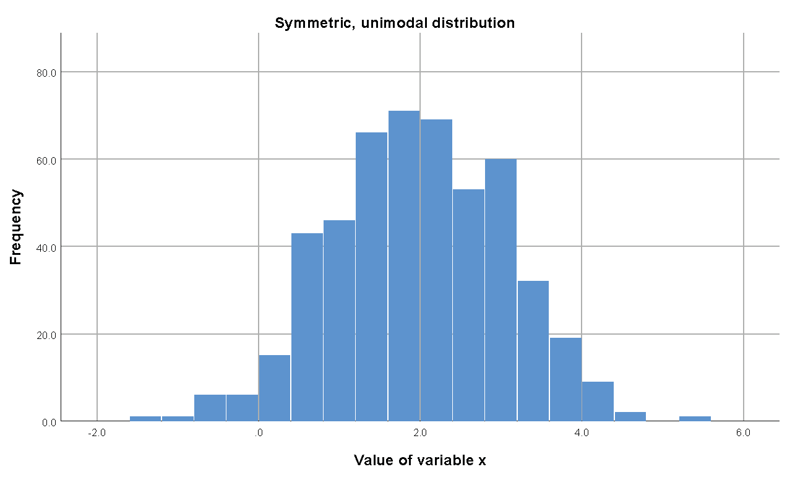
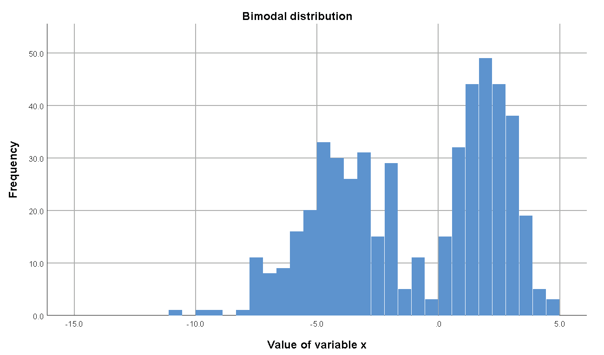
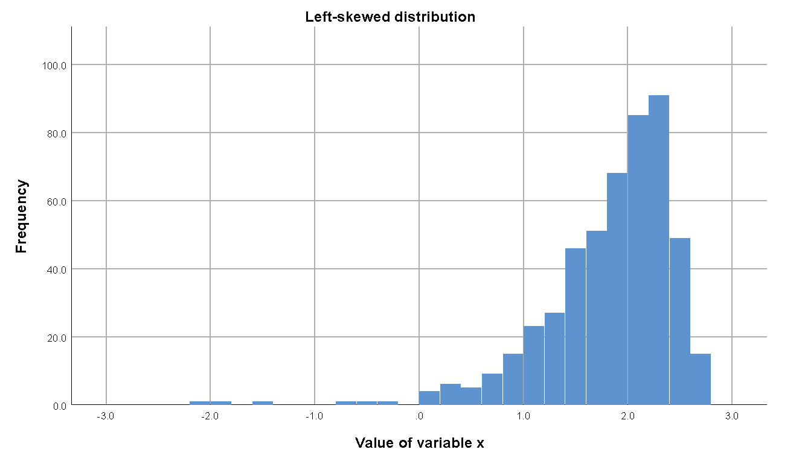
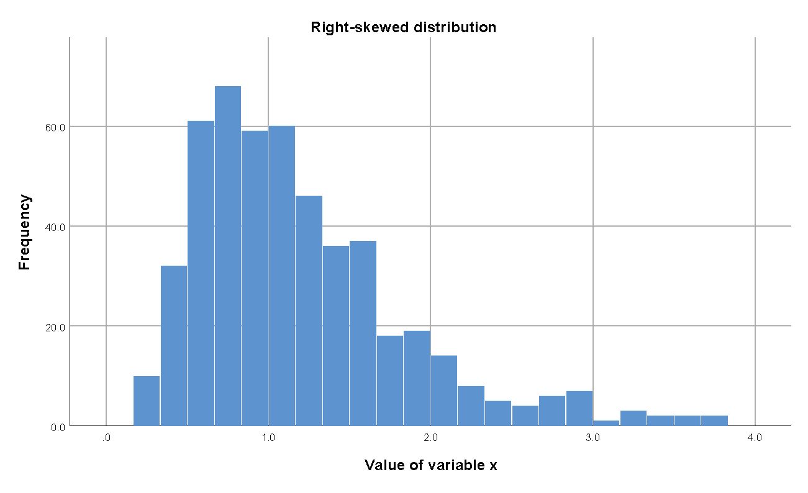
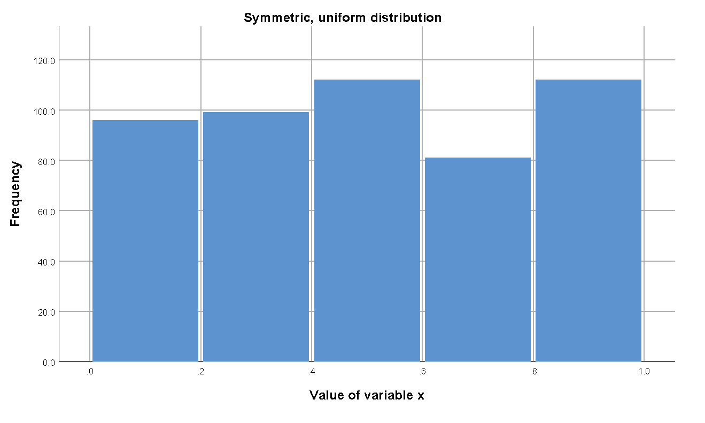

Histograms
STA 150, Marshall University
Anna Mummert
Histograms
Histograms display quantitative data.
Data values are separated into continuous class (bins, bars), typically of the same width.
The length of each bar is the frequency or relative frequency of the class.
The shape of the histogram can help you understand the data - center and spread.
Unimodal - one peak
$N = 500$, $\overline{x} = 2.07$, $s = 1.01$, median$= 2.00$, mode is near tallest bar (center)

Bin width influences graph
$N = 500$, $\overline{x} = 2.07$, $s = 1.01$, median$= 2.00$, mode is near tallest bar (center)
Bimodal - two peaks
$N = 500$, $\overline{x} = -0.99$, $s = 3.40$, median$= -0.28$
Two modes - near each of the two tallest bars

Left Skewed
$N = 500$, $\overline{x} = 1.83$, $s = 0.64$, median$= 1.96$, mode is near tallest bar

Right Skewed
$N = 500$, $\overline{x} = 1.20$, $s = 0.65$, median$= 1.06$, mode is near tallest bar

Uniform
$N = 500$, $\overline{x} = 0.51$, $s = 0.29$, median$= 0.48$, no mode

Bin width influences graph
$N = 500$, $\overline{x} = 0.51$, $s = 0.29$, median$= 0.48$, no mode
Check your understanding
- When data are skewed left, what is the typical relationship between the mean and the median?
- Typically the median would be less than the mean.
- What type (shape) distribution would have the mean and median the same (or very similar)?
- A symmetric data set would have mean and median the same.
- If we added 5 to every value in a data set, how would the mean of the old and new data be related?
- The mean of the new would be the mean of the old plus 5.
- If we added 5 to every value in a data set, how would the median of the old and new data be related?
- The median of the new would be the median of the old plus 5.
Goals of this lesson
- Understand histograms are used for quantitative data
- Identify the distribution shapes unimodal, bimodal, symmetric, left-skewed, right-skewed, unform (rectangular)
- Use a histogram to estimate mean, median, and mode
Reading
Textbook section 2.2: Histograms, Frequency Polygons, and Time Series Graphs.
Textbook section 2.6: Skewness and the Mean, Median, and Mode.